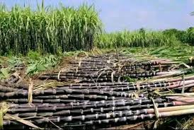
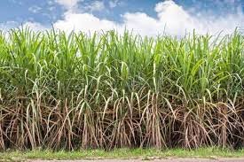
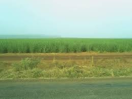

Description
Le champ de la canne à sucre est une vaste étendue cultivée aux alentours de Banfora, connue pour sa production importante de canne à sucre. Cette culture est essentielle pour l’économie locale, fournissant du travail et des ressources à de nombreuses familles de la région.
Historique
La culture de la canne à sucre à Banfora remonte à plusieurs décennies et s’est développée grâce au climat favorable et aux terres fertiles de la région. Elle a contribué à faire de Banfora un centre important pour la production de sucre au Burkina Faso.
Galerie photos


